यदि किसी पिंड से एक सेकंड में 10⁹ इलेक्ट्रॉन किसी अन्य पिंड में स्थानांतरित होते हैं तो 1C आवेश के स्थानांतरण में कितना समय लगेगा?
एक कप जल में कितने धन तथा ऋण आवेश होते हैं?
दो वैद्युत आवेशों के बीच स्थिर वैद्युत बल के लिए कूलॉम नियम तथा दो स्थिर बिंदु द्रव्यमानों के बीच गुरुत्वाकर्षण बल के लिए न्यूटन का नियम दोनों में ही बल आवेशों/द्रव्यमानों के बीच की दूरी के वर्ग के व्युत्क्रमानुपाती होता है।
इन दोनों बलों के परिमाण ज्ञात करके इनकी प्रबलताओं की तुलना की जाए (i) एक इलेक्ट्रॉन तथा एक प्रोटॉन के लिए, (ii) दो प्रोटॉनों के लिए।
इलेक्ट्रॉन तथा प्रोटॉन में पारस्परिक आकर्षण के वैद्युत बल के कारण इलेक्ट्रॉन तथा प्रोटॉन के त्वरण आकलित कीजिए जबकि इनके बीच की दूरी 1 Å( = 10⁻¹⁰ m) है। ( mp = 1.67 × 10⁻²⁷ K, me = 9.11 × 10⁻³¹ kg )
धातु का आवेशित गोला A नाइलॉन के धागे से निलंबित है। विद्युतरोधी हत्थी द्वारा किसी अन्य धातु के आवेशित गोले B को A के इतने निकट लाया जाता है कि चित्र 1.4(a) में दर्शाए अनुसार इनके केंद्रों के बीच की दूरी 10 cm है। गोले A के परिणामी प्रतिकर्षण को नोट किया जाता है (उदाहरणार्थ- गोले पर चमकीला प्रकाश पुंज डालकर तथा अंशांकित पर्दे पर बनी इसकी छाया का विक्षेपण मापकर)। A तथा B गोलों को चित्र 1.4(b) में दर्शाए अनुसार, क्रमशः अनावेशित गोलों C तथा D से स्पर्श कराया जाता है। तत्पश्चात चित्र 1.4(c) में दर्शाए अनुसार C तथा D को हटाकर B को A के इतना निकट लाया जाता है कि इनके केंद्रों के बीच की दूरी 5.0 cm हो जाती है। कूलॉम नियम के अनुसार A का कितना अपेक्षित प्रतिकर्षण है? गोले A तथा C एवं गोले B तथा D के साइज़ सर्वसम हैं। A तथा B के केंद्रों के पृथकन की तुलना में इनके साइज़ों की उपेक्षा कीजिए।
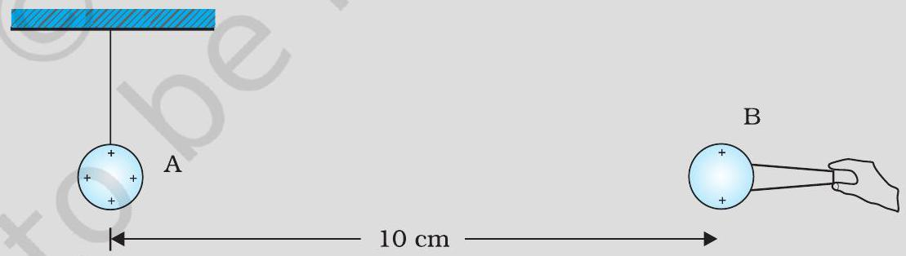
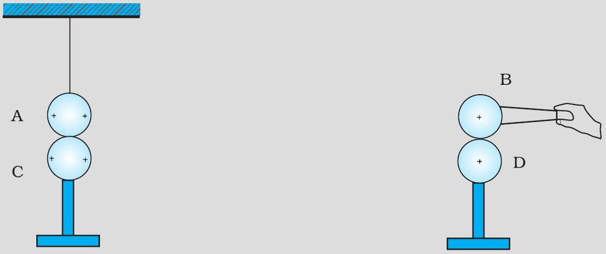
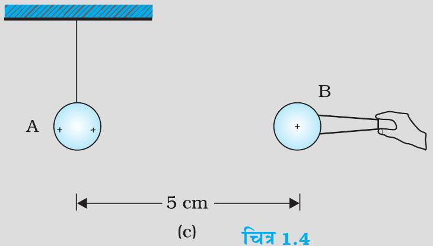
तीन आवेशों q1, q2, q3 पर विचार कीजिए जिनमें प्रत्येक q के बराबर है तथा l भुजा वाले समबाहु त्रिभुज के शीर्षों पर स्थित है। त्रिभुज के केंद्रक पर चित्र 1.6 में दर्शाए अनुसार स्थित आवेश Q (जो q का सजातीय) पर कितना परिणामी बल लग रहा है?
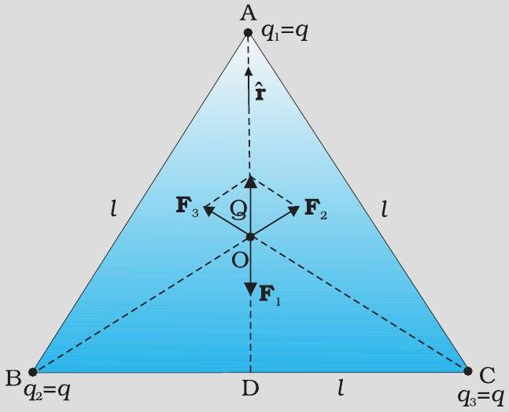
चित्र 1.7 में दर्शाए अनुसार किसी समबाहु त्रिभुज के शीर्षों पर स्थित आवेशों q, q, तथा -q पर विचार कीजिए। प्रत्येक आवेश पर कितना बल लग रहा है?
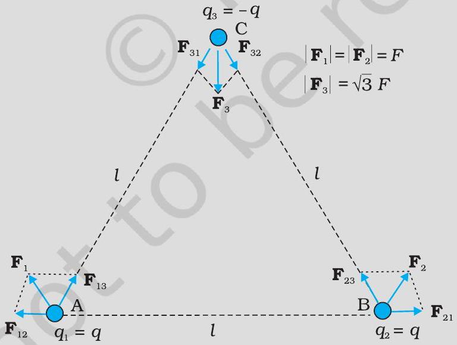
कोई इलेक्ट्रॉन 2.0 × 10⁴ N C⁻¹ परिमाण के एकसमान विद्युत क्षेत्र में 1.5 cm दूरी तक गिरता है [चित्र 1.10(a)]। क्षेत्र का परिमाण समान रखते हुए इसकी दिशा उत्क्रमित कर दी जाती है तथा अब कोई प्रोटॉन इस क्षेत्र में उतनी ही दूरी तक गिरता है [चित्र 1.10(b)]। दोनों प्रकरणों में गिरने में लगे समय की गणना कीजिए। इस परिस्थिति की 'गुरुत्व के अधीन मुक्त पतन' से तुलना कीजिए।
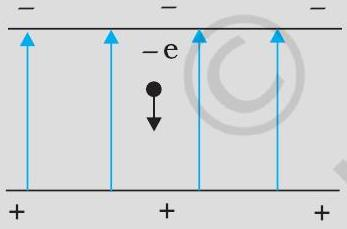
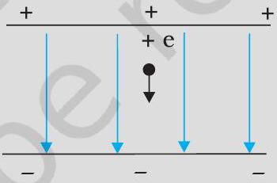
दो बिंदु आवेश q1 तथा q2 जिनके परिमाण क्रमशः +10⁻⁸ C तथा -10⁻⁸ C हैं एक दूसरे से 0.1 m दूरी पर रखे हैं। चित्र 1.11 में दर्शाए बिंदुओं A, B तथा C पर विद्युत क्षेत्र परिकलित कीजिए।
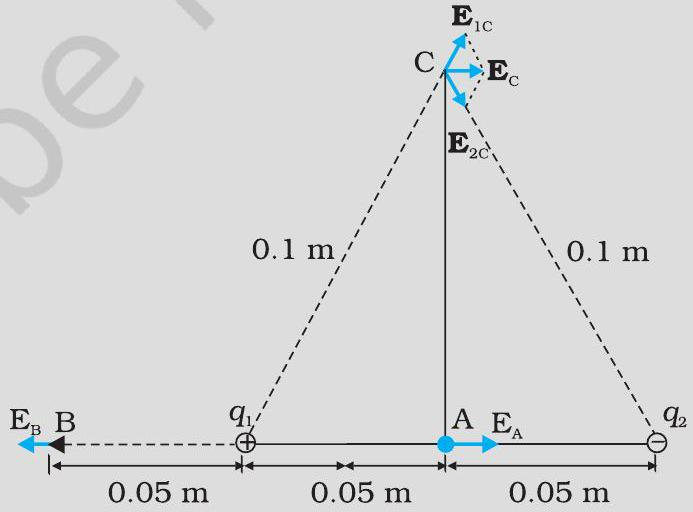
± 10 μ C के दो आवेश एक-दूसरे से 5.0 mm दूरी पर स्थित हैं। (a) इस द्विध्रुव के अक्ष पर द्विध्रुव के केंद्र O से चित्र 1.18(a) में दर्शाए अनुसार, धनावेश की ओर 15 cm दूरी पर स्थित किसी बिंदु P पर तथा (b) द्विध्रुव के अक्ष के अभिलंबवत O से, चित्र 1.18(b) में दर्शाए अनुसार गुजरने वाली रेखा से 15 cm दूरी पर स्थित किसी बिंदु Q पर विद्युत क्षेत्र ज्ञात कीजिए।
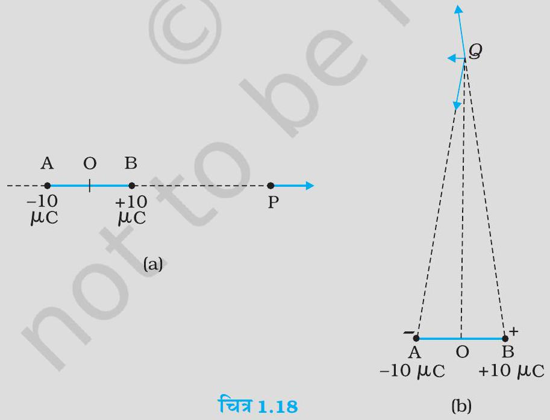
द्विध्रुव के अक्ष पर द्विध्रुव के केंद्र O से चित्र 1.18(a) में दर्शाए अनुसार, धनावेश की ओर 15 cm दूरी पर स्थित किसी बिंदु P पर विद्युत क्षेत्र ज्ञात कीजिए।
द्विध्रुव के अक्ष के अभिलंबवत O से, चित्र 1.18(b) में दर्शाए अनुसार गुजरने वाली रेखा से 15 cm दूरी पर स्थित किसी बिंदु Q पर विद्युत क्षेत्र ज्ञात कीजिए।
चित्र 1.24 में विद्युत क्षेत्र अवयव Ex = α x1 / 2, Ey = Ez = 0 है, जिसमें α = 800 NC m1 / 2 है। (a) घन से गुजरने वाला फ्लक्स, तथा (b) घन के भीतर आवेश परिकलित कीजिए। a = 0.1 m मानिए।
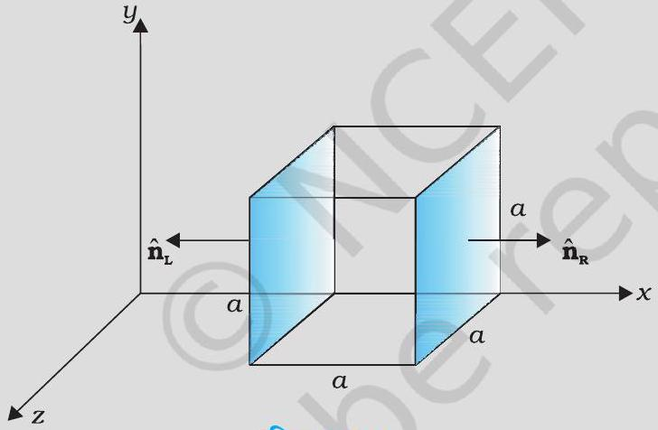
घन से गुजरने वाला फ्लक्स परिकलित कीजिए।
घन के भीतर आवेश परिकलित कीजिए।
कोई विद्युत क्षेत्र धनात्मक x के लिए, धनात्मक x दिशा में एकसमान है तथा उसी परिमाण के साथ परंतु ऋणात्मक x के लिए, ऋणात्मक x दिशा में एकसमान है। यह दिया गया है कि E = 200 î NC जबकि x>0 तथा E = -200 î NC, जबकि x<0 है। 20 cm लंबे 5 cm त्रिज्या के किसी लंबवृत्तीय सिलिंडर का केंद्र मूल बिंदु पर तथा इस अक्ष x के इस प्रकार अनुदिश है कि इसका एक फलक चित्र 1.25 में दर्शाए अनुसार x = +10 cm तथा दूसरा फलक x = -10 cm पर है।
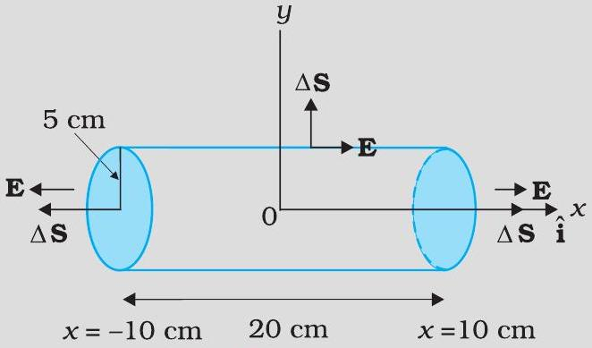
प्रत्येक चपटे फलक से गुजरने वाला नेट बहिर्मुखी फ्लक्स कितना है?
सिलिंडर के पाश्र्व से गुजरने वाला फ्लक्स कितना है?
सिलिंडर से गुजरने वाला नेट बहिर्मुखी फ्लक्स कितना है?
सिलिंडर के भीतर नेट आवेश कितना है?
परमाणु के प्रारंभिक प्रतिरूप में यह माना गया था कि आवेश Z e का बिंदु आमाप का धनात्मक नाभिक होता है जो त्रिज्या R तक एकसमान घनत्व के ॠणावेश से घिरा हुआ है। परमाणु पूर्ण रूप में विद्युत उदासीन है। इस प्रतिरूप के लिए नाभिक से r दूरी पर विद्युत क्षेत्र कितना है?
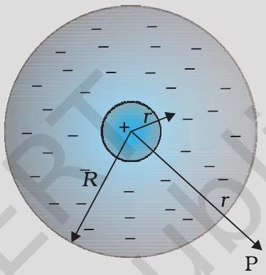
वायु में एक-दूसरे से 30 cm दूरी पर रखे दो छोटे आवेशित गोलों पर क्रमशः 2 × 10⁻⁷ C तथा 3 × 10⁻⁷ C आवेश हैं। उनके बीच कितना बल है?
0.4 μ C आवेश के किसी छोटे गोले पर किसी अन्य छोटे आवेशित गोले के कारण वायु में 0.2 N बल लगता है। यदि दूसरे गोले पर 0.8 μ C आवेश हो, तो:
दोनों गोलों के बीच कितनी दूरी है?
दूसरे गोले पर पहले गोले के कारण कितना बल लगता है?
जाँच द्वारा सुनिश्चित कीजिए कि k e²G me mp विमाहीन है। भौतिक नियतांकों की सारणी देखकर इस अनुपात का मान ज्ञात कीजिए। यह अनुपात क्या बताता है?
(a) "किसी वस्तु का वैद्युत आवेश क्वांटीकृत है," इस प्रकथन से क्या तात्पर्य है? (b) स्थूल अथवा बड़े पैमाने पर वैद्युत आवेशों से व्यवहार करते समय हम वैद्युत आवेश के क्वांटमीकरण की उपेक्षा कैसे कर सकते हैं?
"किसी वस्तु का वैद्युत आवेश क्वांटीकृत है," इस प्रकथन से क्या तात्पर्य है?
स्थूल अथवा बड़े पैमाने पर वैद्युत आवेशों से व्यवहार करते समय हम वैद्युत आवेश के क्वांटमीकरण की उपेक्षा कैसे कर सकते हैं?
जब काँच की छड़ को रेशम के टुकड़े से रगड़ते हैं तो दोनों पर आवेश आ जाता है। इसी प्रकार की परिघटना का वस्तुओं के अन्य युग्मों में भी प्रेक्षण किया जाता है। स्पष्ट कीजिए कि यह प्रेक्षण आवेश संरक्षण नियम से किस प्रकार सामंजस्य रखता है।
चार बिंदु आवेश qA = 2 μ C, qB = -5 μ C, qC = 2 μ C तथा qD = -5 μ C, 10 cm भुजा के किसी वर्ग ABCD के शीर्षों पर अवस्थित हैं। वर्ग के केंद्र पर रखे 1 μ C आवेश पर लगने वाला बल कितना है?
(a) स्थिरवैद्युत क्षेत्र रेखा एक संतत वक्र होती है अर्थात कोई क्षेत्र रेखा एकाएक नहीं टूट सकती। क्यों? (b) स्पष्ट कीजिए कि दो क्षेत्र रेखाएँ कभी भी एक-दूसरे का प्रतिच्छेदन क्यों नहीं करतीं?
स्थिरवैद्युत क्षेत्र रेखा एक संतत वक्र होती है अर्थात कोई क्षेत्र रेखा एकाएक नहीं टूट सकती। क्यों?
स्पष्ट कीजिए कि दो क्षेत्र रेखाएँ कभी भी एक-दूसरे का प्रतिच्छेदन क्यों नहीं करतीं?
दो बिंदु आवेश qA = 3 μ C तथा qB = -3 μ C निर्वात में एक-दूसरे से 20 cm दूरी पर स्थित हैं।
दोनों आवेशों को मिलाने वाली रेखा AB के मध्य बिंदु O पर विद्युत क्षेत्र कितना है?
यदि 1.5 × 10⁻⁹ C परिमाण का कोई ऋणात्मक परीक्षण आवेश इस बिंदु पर रखा जाए तो यह परीक्षण आवेश कितने बल का अनुभव करेगा?
किसी निकाय में दो आवेश qA = 2.5 × 10⁻⁷ C तथा qB = -2.5 × 10⁻⁷ C क्रमशः दो बिंदुओं A : (0,0,-15 cm) तथा B : (0,0,+15 cm) पर अवस्थित हैं। निकाय का कुल आवेश तथा वैद्युत द्विध्रुव आघूर्ण क्या है?
4 × 10⁻⁹ C m द्विध्रुव आघूर्ण का कोई वैद्युत द्विध्रुव 5 × 10⁴ N C⁻¹ परिमाण के किसी एकसमान विद्युत क्षेत्र की दिशा से 30° पर संरेखित है। द्विध्रुव पर कार्यरत बल आघूर्ण का परिमाण परिकलित कीजिए।
ऊन से रगड़े जाने पर कोई पॉलीथीन का टुकड़ा 3 × 10⁻⁷ C के ऋणावेश से आवेशित पाया गया।
स्थानांतरित (किस पदार्थ से किस पदार्थ में) इलेक्ट्रॉनों की संख्या आकलित कीजिए।
क्या ऊन से पॉलीथीन में संहति का स्थानांतरण भी होता है?
दो विद्युतरोधी आवेशित ताँबे के गोलों A तथा B के केंद्रों के बीच की दूरी 50 cm है। यदि दोनों गोलों पर पृथक-पृथक आवेश 6.5 × 10⁻⁷ C हैं, तो इनमें पारस्परिक स्थिरवैद्युत प्रतिकर्षण बल कितना है? गोलों के बीच की दूरी की तुलना में गोलों A तथा B की त्रिज्याएँ नगण्य हैं।
यदि प्रत्येक गोले पर आवेश की मात्रा दो गुनी तथा गोलों के बीच की दूरी आधी कर दी जाए तो प्रत्येक गोले पर कितना बल लगेगा?
चित्र 1.30 में किसी एकसमान स्थिरवैद्युत क्षेत्र में तीन आवेशित कणों के पथचिह्न (tracks) दर्शाए गए हैं। तीनों आवेशों के चिह्न लिखिए। इनमें से किस कण का आवेश-संहति अनुपात qm अधिकतम है?
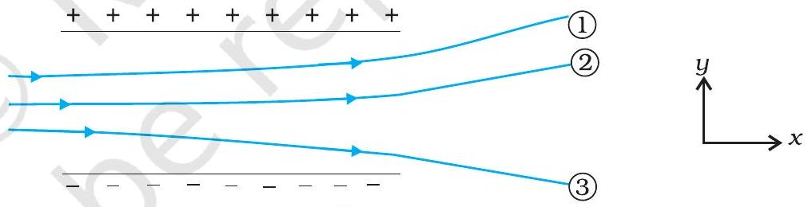
एकसमान विद्युत क्षेत्र E = 3 × 10³ î NC पर विचार कीजिए।
इस क्षेत्र का 10 cm भुजा के वर्ग के उस पार्श्व से जिसका तल y z तल के समांतर है, गुजरने वाला फ्लक्स क्या है?
इसी वर्ग से गुजरने वाला फ्लक्स कितना है यदि इसके तल का अभिलंब x-अक्ष से 60° का कोण बनाता है?
अभ्यास 1.14 के एकसमान विद्युत क्षेत्र का 20 cm भुजा के किसी घन से (जो इस प्रकार अभिविन्यासित है कि उसके फलक निर्देशांक तलों के समांतर हैं) कितना नेट फ्लक्स गुजरेगा?
किसी काले बॉक्स के पृष्ठ पर विद्युत क्षेत्र की सावधानीपूर्वक ली गई माप यह संकेत देती है कि बॉक्स के पृष्ठ से गुजरने वाला नेट फ्लक्स 8.0 × 10³ Nm²C है।
बॉक्स के भीतर नेट आवेश कितना है?
यदि बॉक्स के पृष्ठ से नेट बहिर्मुखी फ्लक्स शून्य है तो क्या आप यह निष्कर्ष निकालेंगे कि बॉक्स के भीतर कोई आवेश नहीं है? क्यों, अथवा क्यों नहीं?
चित्र 1.31 में दर्शाए अनुसार 10 cm भुजा के किसी वर्ग के केंद्र से ठीक 5 cm ऊँचाई पर कोई +10 μ C आवेश रखा है। इस वर्ग से गुजरने वाले वैद्युत फ्लक्स का परिमाण क्या है? (संकेत : वर्ग को 10 cm किनारे के किसी घन का एक फलक मानिए।)
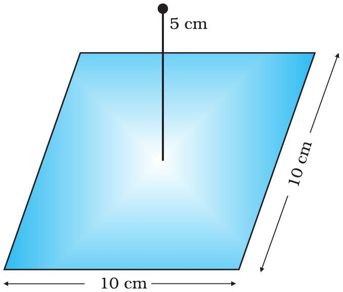
2.0 μ C का कोई बिंदु आवेश किसी किनारे पर 9.0 cm किनारे वाले किसी घनीय गाउसीय पृष्ठ के केंद्र पर स्थित है। पृष्ठ से गुजरने वाला नेट फ्लक्स क्या है?
किसी बिंदु आवेश के कारण उस बिंदु को केंद्र मानकर खींचे गए 10 cm त्रिज्या के गोलीय गाउसीय पृष्ठ पर वैद्युत फ्लक्स -1.0 × 10³ Nm²C है।
यदि गाउसीय पृष्ठ की त्रिज्या दो गुनी कर दी जाए तो पृष्ठ से कितना फ्लक्स गुजरेगा?
बिंदु आवेश का मान क्या है?
10 cm त्रिज्या के चालक गोले पर अज्ञात परिणाम का आवेश है। यदि गोले के केंद्र से 20 cm दूरी पर विद्युत क्षेत्र 1.5 × 10³ NC त्रिज्यतः अंतर्मुखी (radially inward) है तो गोले पर नेट आवेश कितना है?
2.4 m व्यास के किसी एकसमान आवेशित चालक गोले का पृष्ठीय आवेश घनत्व 80.0 μ Cm² है।
गोले पर आवेश ज्ञात कीजिए।
गोले के पृष्ठ से निर्गत कुल वैद्युत फ्लक्स क्या है?
कोई अनंत रैखिक आवेश 2 cm दूरी पर 9 × 10⁴ N C⁻¹ विद्युत क्षेत्र उत्पन्न करता है। रैखिक आवेश घनत्व ज्ञात कीजिए।
दो बड़ी, पतली धातु की प्लेटें एक-दूसरे के समानांतर एवं निकट हैं। इनके भीतरी फलकों पर, प्लेटों के पृष्ठीय आवेश घनत्वों के चिह्न विपरीत हैं तथा इनका परिमाण 17.0 × 10⁻²² Cm² है। (a) पहली प्लेट के बाह्य क्षेत्र में, (b) दूसरी प्लेट के बाह्य क्षेत्र में, तथा (c) प्लेटों के बीच में विद्युत क्षेत्र E का परिमाण परिकलित कीजिए।
पहली प्लेट के बाह्य क्षेत्र में विद्युत क्षेत्र E का परिमाण क्या है?
दूसरी प्लेट के बाह्य क्षेत्र में विद्युत क्षेत्र E का परिमाण क्या है?
प्लेटों के बीच में विद्युत क्षेत्र E का परिमाण क्या है?